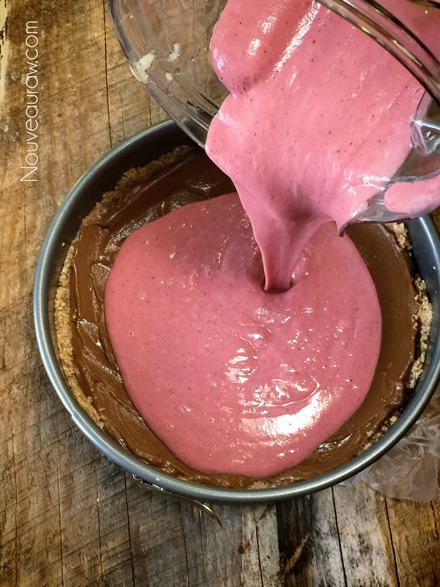

Strawberry Chocolate Pie

~ raw, vegan, gluten-free ~
Aaah, a nut-free recipe! I am sure many of you have noticed how nut-laden most raw desserts have become. Where there is nothing wrong with that, nuts are very healthy for us, but there is a special group of people who have allergic reactions to nuts. One of these “people” is my dear brother-in-law.
So off I went on a journey to find a special dessert just for him. Shew, and what a journey that was. It’s not easy to find such a thing, even in the massive Google Land.
But, through persistence, I found a recipe from Sunnyrawkitchen.blogspot.com. I made some revisions to my own recipe, and I encourage you to do the same. I did, however, have to create my own recipe for a nut-free crust. I just couldn’t find any. If you read this post and have a really good nut-free recipe, please let me know. I would love to try and post it if you do.
As the end result in making this recipe, my brother-in-law told me it gets an A+!! It was a great hit with the rest of the family as well. I sent the remaining pie home with my brother-in-law and he polished it off. Keep in mind that you could get several desserts out of this recipe. You could make a pie, as I did or you could make a parfait, layering all these recipes, just have strawberry pudding or just chocolate pudding. Possibilities are within you just waiting to be created!
So turn on some music, put your dancing shoes on (what? you don’t dance around in the kitchen as I do?) and have fun creating something healthy and delicious for your loved ones.
Nut- Free Crust:
- 2 cups shredded coconut
- 1/2 cup ground flaxseeds
- 1 tsp Ceylon cinnamon
- 1/4 tsp Himalayan pink salt
- 10 dates or 1/2 cup date paste
- 3 Tbsp raw coconut oil
Chocolate filling:
- 2 medium (290 g) ripe avocados, peeled and seed removed.
- 1/2 cup maple syrup
- 1/4 cup raw cacao powder
- 1 Tbsp raw coconut oil, melted
- 1 Tbsp vanilla extract
- 1/4 tsp Himalayan pink salt
- 1/4 cup Irish Moss gel
Strawberry filling:
- 1/2 lb strawberries
- 1 medium banana
- 1/4 cup date paste or agave to taste
- 1/2 tsp pure almond extract
- 1/4 cup Irish Moss gel
- 2 Tbsp melted coconut oil
- 1 Tbsp sunflower lecithin powder or liquid
Preparation:
Crust:
- In your food processor, fitted with an “S” blade, combine the shredded coconut, flax, cinnamon, and salt. Process until the dry ingredients are well mixed.
- Add the pitted dates and coconut oil. Process until the batter sticks together when pinched.
- In the Springform pan, press the batter into the bottom and press firmly. You can also bring it up the sides a little bit for a more rustic look.
- Set aside while you make your fillings.
Chocolate filling:
- In a high-speed blender combine the avocados, maple syrup, cacao, coconut oil, vanilla, salt, and Irish moss. Blend until nice and smooth.
- Pour into the base of the crust, smooth, and set aside.
Strawberry filling:
- After cleaning out the blender, combine the strawberries, banana, sweetener, extract, and Irish moss. Blend until creamy.
- Add the coconut oil and lecithin, blending just long enough to incorporate them. As a rule, these are always the last ingredients to be added to a recipe because they are the thickeners and you don’t want to over blend them.
- Pour the strawberry filling over the chocolate layer and gently spread it evenly.
- Place in the fridge overnight to chill and firm up.
Wrap the base in plastic wrap.
Evenly and firmly press the crust into the base and partway
up the sides, if you wish to.
Plop the chocolate later onto the crust…
Spread evenly and set aside…
The strawberry mixtures has a looser texture than the chocolate,
that’s ok. Pour over the chocolate and evenly spread.

Place in the fridge overnight to chill and firm up.
Once the surface is firm, decorate.
© AmieSue.com